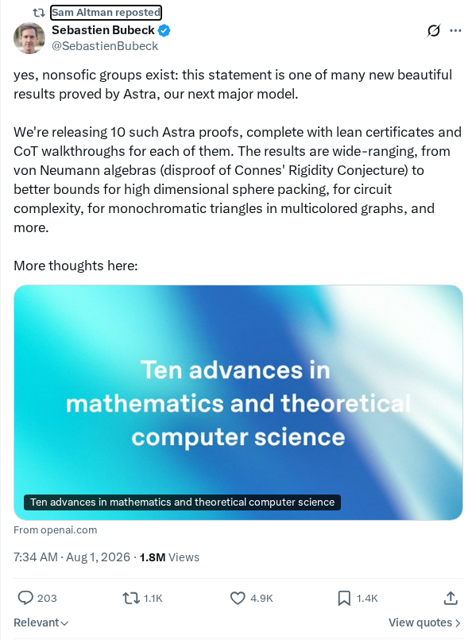
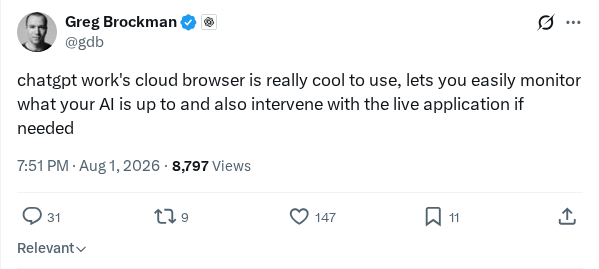
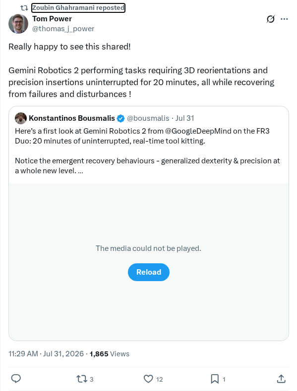
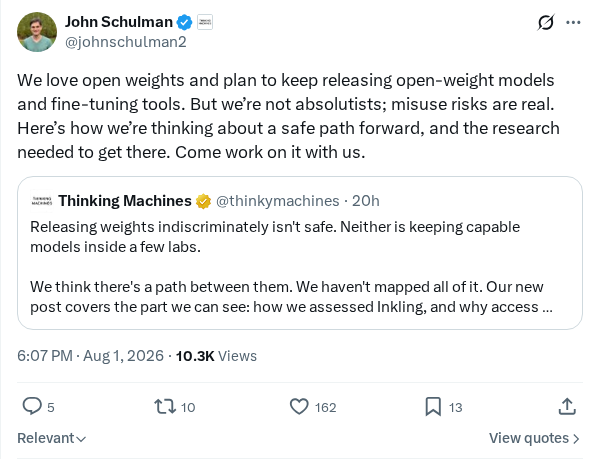

打击基于柬埔寨的恶意犯罪诈骗行动
OpenAI 挫败了一个利用 ChatGPT 支持欺诈计划的柬埔寨犯罪诈骗团伙。犯罪分子使用该人工智能平台进行投资诈骗、情感诈骗、赌博计划和冒充活动。通过检测并终止这些账号，OpenAI 阻止了该团伙为其业务生成说服性内容的能力。此行动是防止恶意行为者滥用 LLM 并与更广泛的网络安全社区分享威胁情报的重要举措。
AI 前沿资讯、研究与趋势精选
OpenAI 挫败了一个利用 ChatGPT 支持欺诈计划的柬埔寨犯罪诈骗团伙。犯罪分子使用该人工智能平台进行投资诈骗、情感诈骗、赌博计划和冒充活动。通过检测并终止这些账号，OpenAI 阻止了该团伙为其业务生成说服性内容的能力。此行动是防止恶意行为者滥用 LLM 并与更广泛的网络安全社区分享威胁情报的重要举措。
一位开发者发布了 nano-llm-posttraining，这是一个开源框架，旨在在低至 8GB 显存的消费级硬件上运行 LLM 后训练实验。该代码库提供了对关键对齐和强化学习技术的精简实现，包括监督微调（SFT）、直接偏好优化（DPO）和组相对策略优化（GRPO）。通过使用低秩自适应（LoRA）和 4-bit 量化等优化策略，该库使研究人员和开发者能够在有限预算下在本地运行高级微调和面向推理的后训练流程。
微软推出了 Flint，这是一种专门为简化人工智能时代数据可视化任务而设计的声明式可视化语言。Flint 被设计为与大语言模型的推理系统原生兼容，使 AI 智能体和人类开发者能够协作生成和修改交互式图表与仪表盘。这种新语言通过将自然语言提示转换为技术执行，降低了数据可视化的认知负荷。该项目旨在提高数据科学和商业智能工作流的生产力。
一篇文章介绍了一种名为“探索性建模”的训练方法，旨在通过在 K 个猜测中选择最佳方案进行训练，从而提高预测准确性和模型适应性。与传统的单路径优化不同，该方法在训练过程中生成多个假设，并根据表现最好的候选者选择性地更新模型权重。这种方法有助于模型在非凸损失景观中导航并避免局部最小值。该技术对于强化学习、生成建模和高不确定性的复杂序列预测任务特别有效。
Google 将生成式人工智能功能直接集成到了 Google Earth 中，以改变用户与地理空间数据和卫星图像的交互方式。此次集成利用先进的生成模型来模拟、可视化和预测复杂的环境变化、历史地理转换和城市发展。该技术使研究人员和城市规划者能够在各种场景下（如海平面上升）生成景观的逼真预测视觉模型。此次更新代表了将多模态生成式计算机视觉引入空间计算框架的重要一步。
Zvi Mowshowitz 发表的一项分析审查了人工智能进展中的关键观点，重点关注安全协议、对齐挑战和存在性风险。文章详细阐述了技术领域内部关于 AI 开发速度、监管行动以及在没有控制框架的情况下实现通用人工智能（AGI）的含义的持续辩论。它聚焦于商业部署与安全之间的紧张关系，呼吁采取协调一致的全球方法来监控能力并减轻系统性风险。

Sam Altman 宣布，OpenAI 即将推出的 Astra 模型家族的内部版本已成功解决了数学、量子复杂性和理论计算机科学领域的十个重大未解难题。这些成就包括以当前 Sol API 定价约 2000 美元的运营成本证明了非单纯群（nonsofic groups）的存在。这一里程碑代表了 LLM 逻辑推理的重大进步，展示了从简单的语言生成向高级科学问题解决转型的潜力。Gary Marcus 等批评者呼吁保持怀疑，质疑这些理论证明的形式有效性，并要求进行同行评审的学术验证。
MiniMax 已正式发布其全新的视频生成模型 H3，该模型在 Hailuo AI 平台上可用。该模型支持专门的文生视频合成和创意音乐视频制作工具，支持中文文本提示、单参考图像和风格化角色参考。演示展示了 H3 架构执行高级动态图形、流畅的界面过渡、战斗视觉生成、口型同步功能以及诸如风格化黑色电影“午夜列车”视频等氛围浓厚的电影序列。这些版本旨在降低复杂视频工作流和高保真视听叙事的门槛。

ChatGPT Work 推出了一项集成云浏览器功能，旨在提高对自主 AI 智能体的透明度和人类控制能力。该工具允许用户在屏幕操作实时展开时，实时监控正在进行的多步骤智能体工作流。此外，该软件引入了一种干预机制，允许开发者或业务用户在需要时介入并直接调整或影响实时应用进程。此功能代表了使自主工作流在日常实际操作中更易于管理、更稳健且更可靠的战略重点。

Google 展示了其最新的机器人智能基础模型 Gemini Robotics 2 的先进物理能力。演示重点介绍了物理自动化方面的重大技术进步，特别是高精度插入动作和复杂的 3D 物体重定向。通过利用 Gemini 模型的多模态推理架构，物理机器人硬件可以感知变化、规划轨迹并在各种环境中执行精确的运动。此次集成代表了在工业和家庭自动化场景中弥合抽象 AI 推理与物理灵巧性之间差距的重要一步。

John Schulman 讨论了其组织对开放权重模型的战略承诺以及对辅助微调工具的积极开发。该公告概述了一条旨在平衡开源科学贡献与减轻 AI 滥用风险的技术路线图。Schulman 强调了安全导航模型分发所需的关键研究，并向安全和对齐研究人员发出加入团队的公开邀请。该倡议强调了一种协作方法，旨在解决模型评估和对齐挑战，同时保持公众对强大的神经网络权重的访问权限。